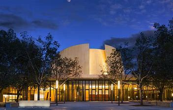

Stanford Performing Arts
Bing Concert Hall

The Bing Concert Hall at
Stanford will play a vital role
on campus and in the local
community. The hall's
exceptional acoustics and
state-of-the-art technical
capabilities will showcase the
world's finest performers.
The hall is scheduled to open
early in 2013. The concert hall will have 844 seats in an intimate
vineyard-style configuration, with terraced sections wrapping all the way
around the stage.
Autumn 2012
Edition
Calendar
| Harmony for Humanity: Daniel Pearl
World Music Concert
|
| Sundays with the St. Lawrence String
Quartet |
| Merce Cunningham Dance Company |
| Juilliard String Quartet |